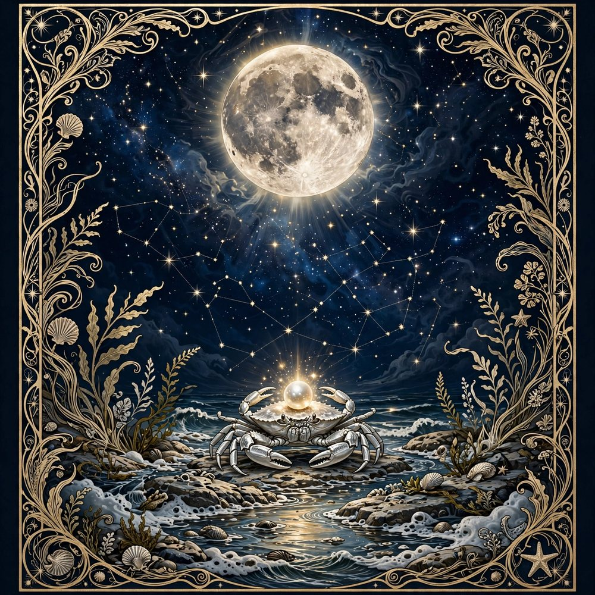

Sun in Cancer
The Core
You are ruled by the Moon herself. Cancer Suns feel the emotional weather of every room and build safe harbors for the people they love.

Cancer is the only sign ruled by the Moon herself, and it shows: this cardinal water sign lives by tides — of feeling, memory and intuition. Cancer builds nests and sanctuaries, feeds everyone who enters, and remembers everything. The crab's shell isn't weakness; it's architecture, protecting one of the softest hearts in the zodiac.
Cancer natives lead with care and read rooms like weather. Their intuition is close to a sixth sense, especially about the people they love. Their lesson is boundaries: to care without carrying, and to let the shell open without fearing the sky.
You are ruled by the Moon herself. Cancer Suns feel the emotional weather of every room and build safe harbors for the people they love.
Your feelings run deep and tidal. Home, memory and chosen family are where your heart recharges.
You come across as gentle and guarded in equal measure — a soft exterior around a fiercely protective core.
In love, Cancer is tender, romantic and profoundly loyal. They court with home-cooked everything and total attention, and they need emotional safety above all — a partner who stays, listens and means it. Betrayal is the one unforgivable thing.
Cancer excels in care, food, homes, healing, history and family business — anywhere emotional intelligence is the real skill. They build workplaces that feel like families.